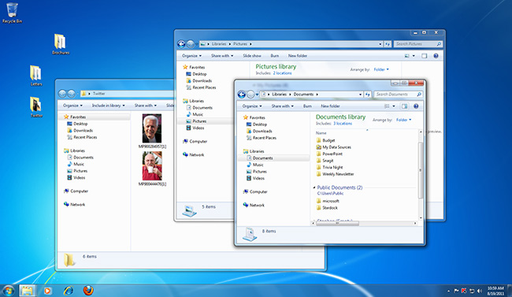

Microsoft created the Windows operating system in 1980s. There have been many different versions of Windows, but the most recent ones are Windows 10 (released in 2015), Windows 8 (2012), Windows 7 (2009), Windows Vista (2007) and Windows XP Windows comes pre-loaded on most new PCs, which helps to make it the most popular operating system in the world. The first version of Windows, released in 1985, was simply a GUI offered as an extension of Microsoft’s existing disk operating system, or MS-DOS. Based in part on licensed concepts that Apple Inc. had used for its Macintosh System Software Windows for the first time allowed DOS users to visually navigate a virtual desktop, opening graphical “windows” displaying the contents of electronic folders with the click of a mouse button, rather than typing commands and directory paths at a text prompt. Subsequent versions introduced greater functionality, including native Windows File Manager, Program Manager and Print Manager programs, and a more dynamic interface. Microsoft also developed specialized Windows packages including the networkable Windows for Workgroups and the high-powered Windows NT, aimed at businesses. The 1995 consumer release Windows 95 fully integrated Windows and DOS and offered built-in Internet support including the World Wide Web browser Internet Explorer With the 2001 release of Windows XP, Microsoft united its various Windows packages under a single banner offering multiple editions for consumers, businesses, multimedia developers, and others. Windows XP abandoned the long-used Windows 95 kernel (core software code) for a more powerful code base and offered a more practical interface and improved application and memory management. The highly successful XP standard was succeeded in late 2006 by Windows Vista, which experienced a troubled rollout and met with considerable marketplace resistance, quickly acquiring a reputation for being a large, slow, and resource-consuming system. Responding to Vista’s disappointing adoption rate, Microsoft in 2009 released Windows 7, an OS whose interface was similar to that of Vista but was met with enthusiasm for its noticeable speed improvement and its modest system requirements. Windows 8 in 2012 offered a start screen with applications appearing as tiles on a grid and the ability to synchronize settings so users could log on to another Windows 8 machine and use their preferred settings. In 2015 Microsoft released Windows 10, which came with Cortana, a digital personal assistant like Apple’s Siri, and the Web browser Microsoft Edge, which replaced Internet Explorer. Microsoft also announced that Windows 10 would be the last version of Windows meaning that users would receive regular updates to the OS but that no more large-scale revisions would be done.
